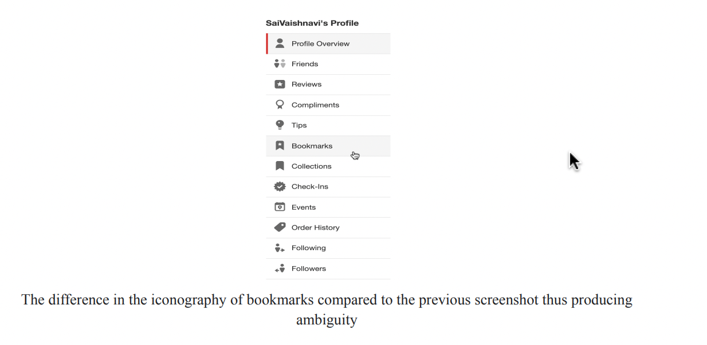
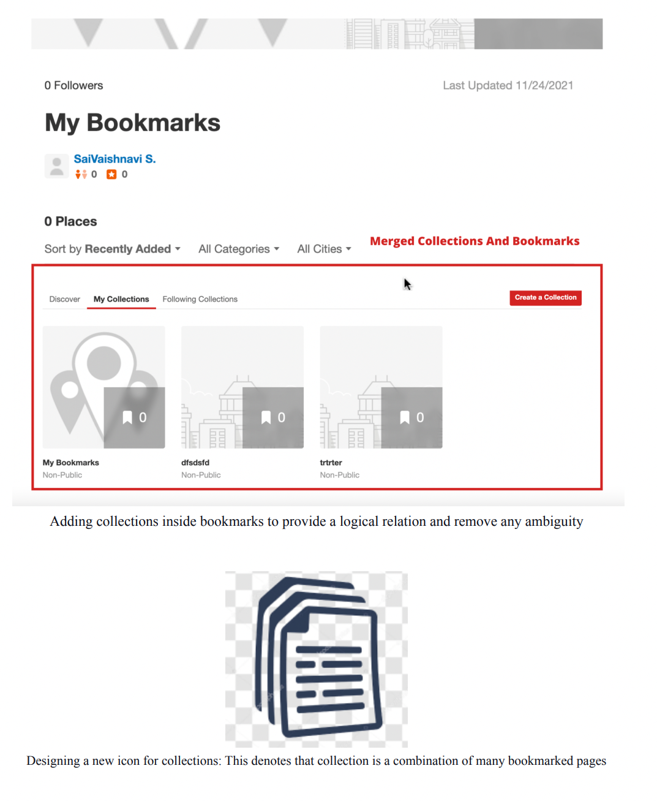
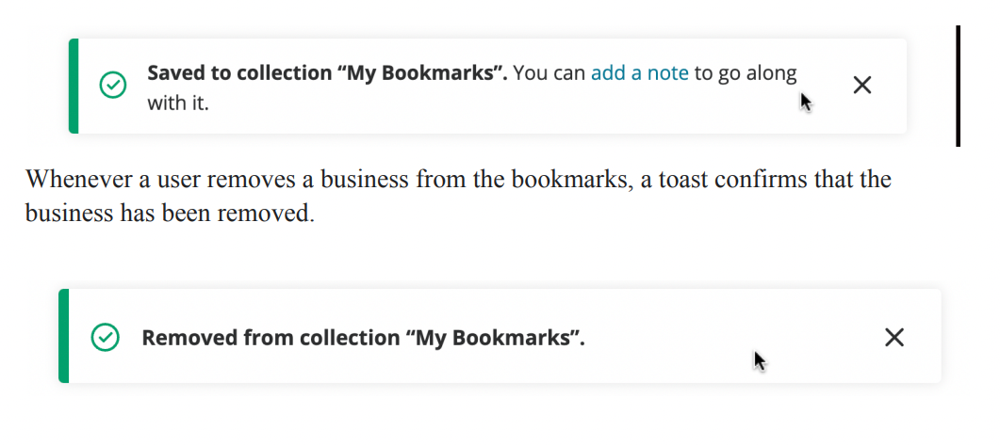
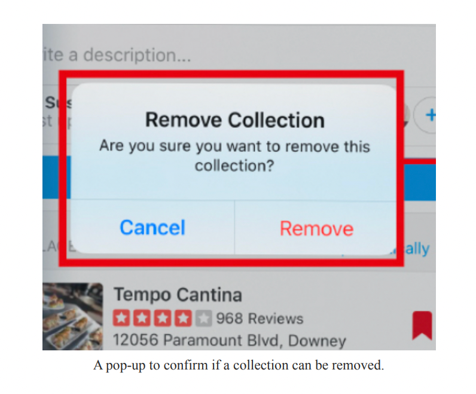
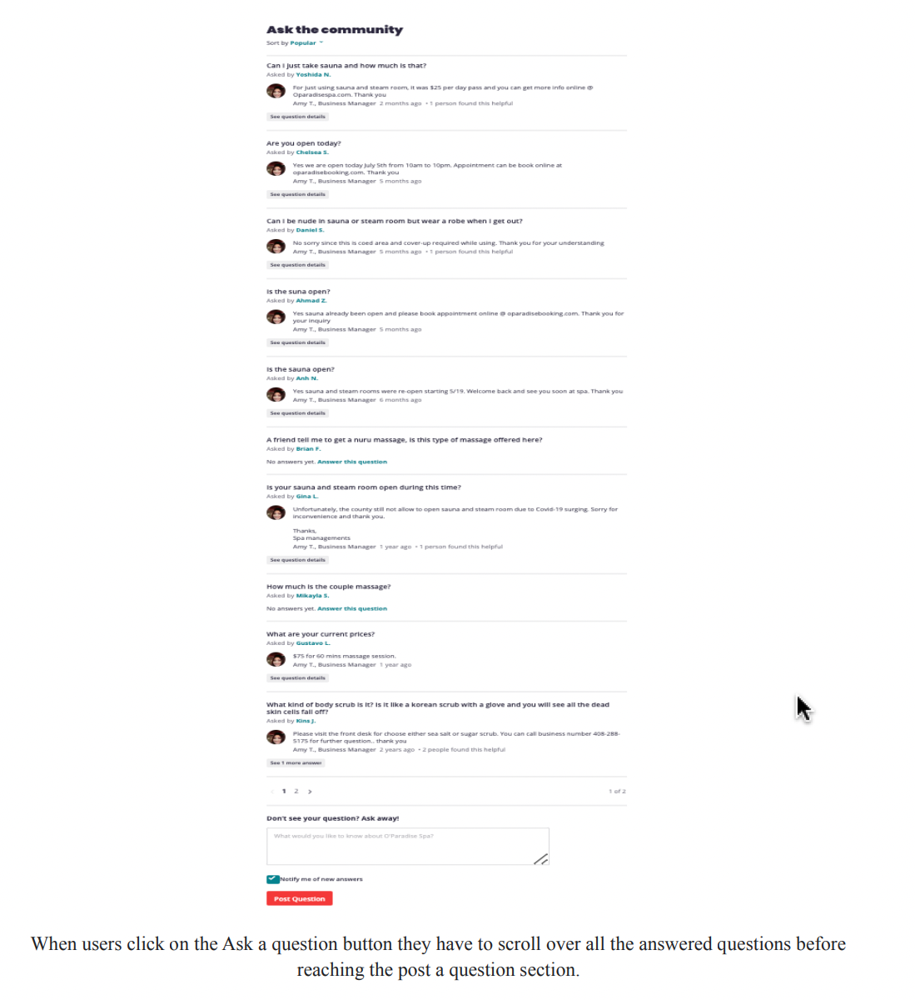
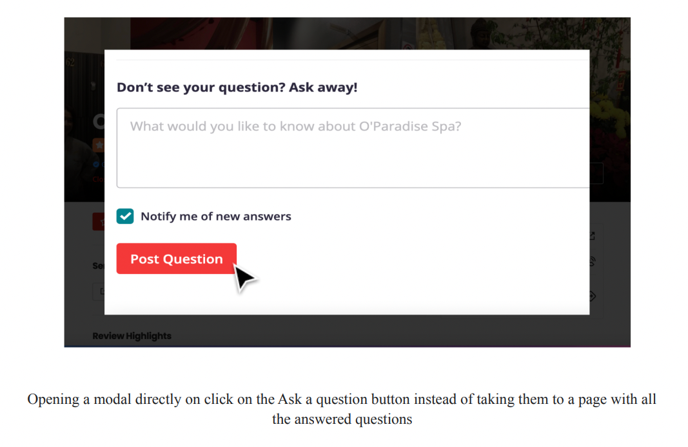
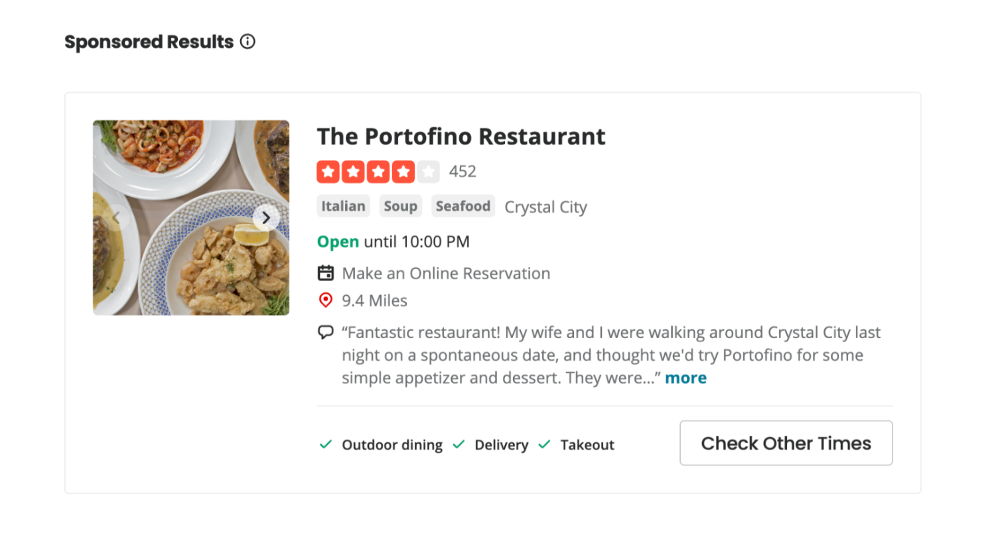
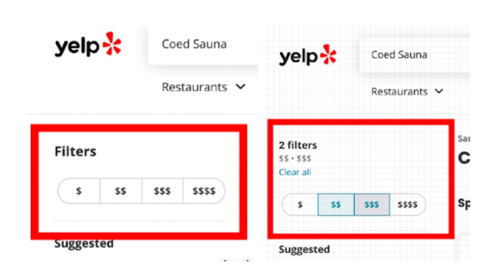

Hi [Name],
I am a student doing Masters in Human-Computer Interaction at the
University of Maryland, and I am working on a project to improve the
Yelp website's experience. I will collect your feedback by asking you to
record your experience over Zoom and answer some questions.
The session will last about 30 - 40 minutes. To participate, please sign
up for the time slot below.
https://calendly.com/sswamin1/yelp-usability-test
Please access the consent form below.
https://forms.gle/nt7mUqSpRqV7eozP9
Please take this study in a quiet place, such as an office or home.
I am looking forward to it!
Thanks,
Sai Vaishnavi Swaminathan
| Responsibility | Time | Category | Tools |
|---|---|---|---|
| UX Research, UX Design | 3 months | Web App | Figma, Miro, Zoom, Adobe Creative Suite |
Introduction
I am very fond of the Yelp website, and I use it almost every month to satisfy my
food cravings. So, I chose to look at Yelp to locate some points of
improvement for the platform based on user feedback. Sometimes, Yelp's system
becomes hard to use because of its low discoverability of valuable features.
Also, I felt it
would be interesting to understand the level of challenge in the user flows. I was
also interested in knowing what works well in the interface and what improvements
could be made to improve it.
About Yelp
● Established in 2004, Yelp is a crowdsourced local reviews app - users can review
and
judge other
businesses using existing users' reviews.
● The local business can utilize the Yelp app to
register
themselves and the services
they provide so that users can quickly discover and rate those businesses.
● The
app's
mission is to connect people
with great local businesses; by doing that, they hope to improve the lives of
the
users and business
owners.
Project Vision
This study aims to identify the pain points in Yelp's business discovery user flows on a
desktop web browser, specifically focusing more on the search and filter feature.
Objectives
● To understand how users discover and evaluate businesses on Yelp and how they use Yelp's filters, if applicable.● To identify the pain points by using filters and ratings to refine search results.
● To test the effectiveness, error tolerance, efficiency, and ease of using the search and filter feature and whether the results are relevant to the user's search.
Research Questions
● What kind of search activities do participants use to find businesses? (e.g., keyword searches, filtering, tabs, etc.)● How do the participants find the filter options once they fire the search?
● What is confusing or frustrating about the filters and rating metric within the experience, if applicable?
What kind of search activities do participants use to find businesses? (e.g., keyword searches, filtering, tabs, etc.)
Design Process
Research & Analysis
Define & Ideate
Design
Heuristic Evaluation
● Heuristic Evaluation is a usability inspection method that contains a set of
principles
or
heuristics that help unearth issues that might occur when users interact with
products.
● Justifying the problems based on set heuristics helps focus on usability, thus
eliminating
the subjectivity or bias in a usability evaluation.
● Furthermore, it provides
quick and
cost-effective feedback to designers of the website.
● When the correct heuristic is
assigned
It can help suggest apt corrective measures to the designers for usability problems.
● I leveraged Ben Shneiderman’s Eight Golden Rules of Interface Design because it
is one
of the leading frameworks in the field of HCI.
● These heuristics provided a higher
level
scope than other frameworks, and they help in focusing on the core tenets of usability
that can make or break the user experience.
● Heuristic principles like ‘Permit easy reversal of actions’ advocate for a way of
handling
errors and design a forgiving system that allows users to undo and redo their
actions.
● Even a principle like ‘Keep users in control’ requires designers to design a
website
that
provides users with a strong sense of control and ensures no cognitive overload.
● Hence I
believe that Ben Shneiderman’s Eight Golden Rules is well suited for testing the
individual components of the website.
● I also think that using this heuristic set
would
help
unearth many usability issues in the Yelp website.
The Eight Golden Rules are as follows:
● Strive for consistency
● Seek universal usability
● Offer informative feedback
● Design dialogs to yield closure
● Prevent errors
● Permit easy reversal of actions
● Keep users in control
● Reduce short-term memory load
Key findings
-
01 Strive for consistency
Let’s take a look at the profile menu of the user. They have provided two different options, which are bookmarks and collections.
The difference in the iconography of bookmarks compared to the previous screenshot thus producing ambiguity
If you see here, the bookmarks icon is something different than what we saw in the previous pages. Thus a user may experience difficulty in differentiating between the functionality and abilities of Bookmarks and Collections features. Furthermore, the inconsistent iconography may further confuse the user when they try to add business.
Design Suggestion
● It is greatly recommended to provide more significant differences between these two options of bookmarks and collection.
● Since collections are a part of the bookmarks feature, it is better to keep them under a single tab of Bookmarks.
● Inside the bookmarks tab, we could have the businesses displayed inside collections.
● Design a different and more meaningful icon for the collections option
 -
02 Design dialogs to yield closure
There might be cases when a user adds/removes businesses from the bookmarks list by mistake. Thus it is necessary to design a pop-up that allows the user to provide a confirmation whenever a bookmark is added or removed from the bookmarks list.
For example, when a user removes a business from the collection, a pop-up dialog must appear that allows the user to either confirm the removal or change their mind before the action is committed.
Thus, when removing or adding a business to the bookmark list, there is no constraint provided to the user that helps in preventing them from performing an unintended action.
Design Suggestion
Whenever a user adds or removes businesses from the collection, a pop-up dialog could be designed to confirm the action before committing it.
 -
03 Keep users in control
Suppose the scenario is that a user doesn't want to skim through the already answered questions but instead chooses to ask the question directly to the business owner. They would now select the ask a question button. This should ideally take the user to the input box where they can type in the question. In In contrast, the user is taken to a page where other users have posted questions for the business, and the ask a question input box only appears at the bottom of the page. Thus it makes the user scroll through almost 10-12 questions before providing the input box. Even though See all questions and ask a question are two different buttons with two other results, the website fails here and shows the same result for both the options. They make the users scroll through already asked questions before providing them the ask a question input box. Users don't want surprises or changes in expected behavior, and they get annoyed by the difficulty in obtaining necessary information and the website's inability to produce the desired result. When users click on the Ask a Question button, they have to scroll over all the answered questions before reaching the post a question section.
Design Suggestion
● The users must get desired results when they select the Ask a question button. It could result in a modal with the ask a question input box and a submit button.
● And, when the user explicitly selects the 'See all questions' button, the page could direct them to the list of answered questions

User Research
I am very fond of the Yelp website, and I use it almost every month to satisfy my food
cravings. Therefore, I chose to look at Yelp to locate some points of improvement for
the platform based on user feedback. Sometimes, Yelp's system becomes hard to use
because of its low discoverability of valuable features and the ambiguity in its
structure.
I hoped to learn how the usability evaluation method would help identify the real-time
problems in the business discovery flow and the filters feature. Also, it would be
interesting to understand the level of challenge in the user flows. I was also
interested in knowing what works well in the interface and what improvements could be
made to improve it. I was looking for information on whether the results satisfy users'
needs. I was looking forward to researching Yelp, applying usability evaluation
concepts, and producing good results.
The information I collected from the research provided valuable information on
challenges in the existing system. Given that Yelp already has a large user base and is
dedicated to being a reliable peer-reviewed online directory for local businesses, the
study results would enhance user confidence in the Yelp app and further improve its
competitive advantage. Furthermore, the results and recommendations gleaned from the
study will enhance the app's mission, which is to connect people with great local
businesses.
Objective
● The objective was to determine how easy or challenging it is for users to discover
businesses on the
platform.
● I wanted to identify problems in the business discovery flow,
specifically the
search and filter
features.
● I wanted to understand how occasional and brand new users of Yelp
perform
everyday tasks
(essential features like discovering businesses) and at least one less common task
(set filters in a
search query or ask a question to an establishment) to test the intuitiveness of
advanced features.
● I also
wanted to learn how participants choose to go about their search, how they use the
filters, and how they
choose a business utilizing the rating systems.
● After each task, I also wanted to
ask
the participants to rate
their usability and whether they could quickly complete the job.
Participants' Information
For this study, I focused on observing existing semi-frequent users and brand new users
of Yelp as I
believe that a new set of eyes will uncover many issues. As Yelp has a huge user base, I
wanted the
interface to appeal to those already using it, so I will also include current users
since it wouldn't make
sense to alienate existing users to woo new ones. I did not choose power users (frequent
users of an app)
as their experience would differ from an occasional user. Also, I followed the industry's best
practices and ran
my study on five users (the Nielsen Norman Group points out that a sample of 5 users can
uncover 85%
of a website's issues).
Because Yelp users come from various backgrounds, I was not focusing too heavily on age
and gender
(based on the analysis of typical Yelp users (Yelp statistics, demographics, users, and
facts for 2021,
2022). As per Yelp statistics, the US has 41.9% of users between 18 and 34 years old
(Yelp statistics,
demographics, users, and facts for 2021 and 2022). Over 37% of users fall between 35 and 54
years old, and
19.9% are older than 55 (Yelp statistics, demographics, users, and facts for 2021,
2022). Also, 60% of
Yelpers have some college education (Yelp statistics, demographics, users, and facts for
2021, 2022; Fast
facts, n.d). Since most of the users of Yelp are college graduates, I also selected
users who have
completed their undergraduate studies or are pursuing higher education and are sound
with technology.
The users that I recruited had different income levels. Also, I wanted the participants
to perform various
tasks on Yelp so they might need access to an account. Thus, the test base will be
divided into two types:
One with Yelp accounts and one without. To eliminate the possibility of power users,
those with Yelp
accounts were users who had spent less than six months on the platform. Finally, for a
hassle-free remote
testing experience, I planned to test Yelp's website on desktops, not mobile devices. I
also recruited some
participants who have experience using Yelp's competitor products. Some of its
competitors of Yelp are
Google, TripAdvisor, Yahoo!, OpenTable, and Foursquare.
Finally, I selected participants from Internet forums and message boards because they
provided a reliable
recruitment method for such a qualitative study. As a student researcher, I believe
relying on niche forums
and message boards to find participants is a cost-effective method as it's too hard to
recruit using more
broad or traditional methods. In my experience, recruiting strangers from the internet
groups would eliminate
any potential bias because if I had relied on my contacts (convenience sample), they
would have some
relationship with me and may be reluctant to give honest feedback. Considering this
the method runs a high
risk of sampling bias or groupthink, I prevented it by identifying the target audience
using screeners and
conducting one-to-one sessions to garner personal insights. One challenge I predicted in
the test session
was when participants tried to modify their behavior due to my presence. I avoided this
by building
rapport with my participants using effective icebreaker strategies.
User Persona
Research Methodology
The research method I used in this study is moderated usability testing. I chose
moderated usability
testing as it provided more significant benefits than unmoderated testing, such as
clarifying ambiguities
and asking users for more information about their perspectives. I chose this specific
method to understand
the end-to-end business discovery flow as the participants performed the timed tasks.
This will help me
collect qualitative and quantitative data about the workflow, thus paving the way for
unearthing the
critical issues in the user journey.
The usability test consisted of an introduction, a series of tasks, and a short
interview for asking the
post-test questions. The participants were instructed to 'Think Aloud' and share their
thoughts throughout
the test. Following the task series, I gathered the users' responses and asked
additional questions about
their experience with Yelp. The test concluded with an opportunity for further,
open-ended comments on
Yelp's usability and the administered test in the form of post-test questions, which
provided additional
opportunities for qualitative insight.
It took users between 30 and 40 minutes to complete the usability test. I followed the
templated below for
all five usability test sessions.
Introduction : 2 minutes
The introduction explained the participants' rights, roles, and responsibilities. Also, it included a short series of warm-up questions to build a rapport with the participants.
Tasks: 20 - 25 Minutes
The task list guided the participants through a series of use case scenarios. In this portion, I collected data on time spent completing the tasks and the success rate, but the additional data came from 'think aloud' comments provided as feedback.
Post-Test Questionnaire: 5-8 Minutes
Following the tasks, I asked the participants several post-test questions about Yelp's usability and experience.
Recruiting Users
Screener Survey
The primary criteria for screening the participants for the usability study were as
follows:
● Never or seldom-used Yelp, or were relatively new users of Yelp (less than three
months)
● Experience with online video chatting tools and web browsers
As mentioned previously, due to constraints in time and resources, I recruited
participants for my study from internet groups and message boards. I contacted members
of the social media platform or internet group and asked for permission from the
group's moderator in advance. I gained initial consent, then shared the screener survey
in the google forms format through the same social networking site. The final version of
the screener survey is available below.
Participants’ Screener Survey for Yelp Usability Test
Established in 2004, Yelp is a crowdsourced local reviews app - users can review and
judge other businesses using existing users' reviews. Furthermore, users can also find
events and use the interface to talk to other ''Yelpers.''
In this study, I am trying to understand the user experience of Yelp's website and if
Yelp's mission and values are easy for non-business users to understand, and the
entire customer experience is hassle-free. I am looking for participants who wish to
participate in this usability study and share their feedback. Please fill out the
screening survey below (it takes about 5 minutes), and I will send you details about the
1-hour remote video usability testing session upon selection. The participants in this
study will be accessing Yelp from its website.
I appreciate your interest in the survey. Though I will not compensate you for your
contribution, I greatly appreciate your time and response. Please note that all the
answers to the below questions will remain confidential.
Please feel free to email me (sswamin1@umd.edu) in case you have any questions.
| Question | Question Type | importance |
|---|---|---|
| What is your name? | Short Answer | Required |
| What is your age? ● Under 18 ● Between 18 - 24 ● Between 25 - 34 ● Between 35 - 44 ● Between 45 - 54 ● Above 55 |
Multiple Choice | Required |
| Please specify your gender ● Female ● Male ● Non-Binary ● Transgender ● Intersex ● I don’t identify with any gender ● I prefer not to say |
Multiple Choice | Required |
| What is your highest education level? ● No schooling completed ● Nursery school to 8th grade ● Some high school, no diploma ● High school graduate, diploma or the equivalent (for example, GED) ● Some college credit, no degree ● Trade/technical/vocational training ● Associate degree ● Bachelor’s degree ● Master’s degree ● Professional degree ● Doctorate degree |
Multiple Choice | Required |
| Are you located in the US? ● Yes ● No |
Multiple Choice | Required |
ⅠⅠ. Yelp Usage Information
| Question | Question Type | importance |
|---|---|---|
| Do you have a Yelp account? ● Yes ● No |
Multiple Choice | Required |
|
How often do you use Yelp? ● Everyday ● A few times a week ● A few times a month ● A few times a year ● Never |
Multiple Choice | Required |
| Will you be interested in using Yelp in the future? ● Yes ● No ● Maybe |
Multiple Choice | Required |
| Do you have experience using Google search, TripAdvisor, Yahoo!,
OpenTable, or Foursquare? ● Yes ● No |
Multiple Choice | Required |
ⅠⅠⅠ. Remote Test Session Information
| Question | Question Type | importance |
|---|---|---|
| Which of the following web browsers do you have experience
with? Select all that may apply. ● Firefox ● Safari ● Microsoft Edge ● Google Chrome ● Other |
Checkbox | Required |
|
Are you comfortable with Zoom or Google Meet for the test
session? If not, provide any other video chatting tool that you
would prefer. ● Yes ● No ● Other |
Multiple Choice | Required |
| Should you be qualified for this study, please specify the best way to contact you (e.g. phone, email). | Short Answer | Required |
| Are there any comments, concerns, or questions you would like to share? | Short Answer | Required |
Invitation
I contacted some followers of Yelp, Open Table, and Yahoo on Reddit and some new active group members of Yelp in Quora to gain consent for their participation in the usability study. I initially sent the screener survey to around 12 members who seemed interested and responsive to taking part in the study. After receiving the responses to the survey, I filtered participants who were brand new and semi-frequent users of Yelp and sent the below invitation mail so that they could select a suitable time to attend the usability study and gain their consent.
User Profile
| Details | User 1 | User 2 | User 3 | User 4 | User 5 |
|---|---|---|---|---|---|
| Age range | 18 to 34 years | 18 to 34 years | 35 to 55 years | 18 to 34 years | 35 to 55 years |
| Gender | Male | Female | Female | Female | Female |
| Education level | Masters degree | High school graduate | Bachelor’s degree | Bachelor’s degree | Masters degree |
| Device | Desktop computer | Laptop | Desktop computer | Laptop | Laptop |
| How often do they use Yelp? | A few times a year | A few times a year | No prior experience with Yelp | No prior experience with Yelp | A few times a year |
| How long have they been using Yelp? | Less than six months | Less than six months | New user | New user | Less than six months |
| Do they have a Yelp account? | Yes | Yes | No | No | Yes |
| Other apps | Google Search, Yahoo | Google Search, Open Table, Yahoo | Google Search | Google Search, Open Table | Google Search |
Preparing test script and task list
While I was waiting for the participants to fill out their availability information, I prepared
the
usability test script for the test session.
The test objective was to measure the following:
● Can the participants correctly enter the search criteria in the correct fields?
● Once they find the initial search results, can the participants refine them further using the
available filters?
● Can they edit the search criteria and filter fields to acquire the targeted results when they
cannot
find the apt search results?
● Can the user understand the critical information on the business information page upon finding
the
targeted results? Are they able to scan reviews and learn more about the business?
● Can the users quickly identify and use other advanced features like saving favorite
restaurants,
posting reviews and photos, etc.?
The consent form was provided to each participant before the test, clarifying their roles,
responsibilities, and rights. The usability tests were held between June 30th and July 4th, with
five participants in total. The test scenarios and post-test questionnaires below offer
quantitative
and qualitative insights into how well participants understand Yelp's tools.
Introduction
Hello, and welcome to the Yelp usability test session. Thank you for your participation. This usability test session aims to determine how easy or challenging it is to find information about businesses on the Yelp platform.Reiterating participants' rights and privacy
Your participation in this test is voluntary, and you are allowed to leave at any time. The responses and results from the session will be confidential. You have provided consent to participate in this study and to record the session for our analysis.Clarifying the role of the participant
I will ask you to complete a series of tasks online using the Yelp website and record your responses. Upon completing each task, I will ask you to rate the difficulty level. You must think out loud when you are performing the tasks so that I understand how you are performing. I may sometimes stop and ask you to elaborate on specific actions for better understanding.Ice Breaker
How outdoorsy are you as a person?What is your favorite outdoor activity?
If you want to explore any new place, how would you go about finding it?
Do you use any online platforms for searching for new places in the area? If so, which ones?
Tasks
Today we will use Yelp.com, an online tool for finding businesses in your area. I will ask you to complete a set of tasks on the site to understand better how you experience the website. Please try to think out loud as much as possible and share with me what is going on in your mind.The task list is as follows:
1. Imagine that it's your friend's birthday. Search for a potential restaurant [Open 6 PM current night | Serves Chinese | Around $20/person | Near the Prince George Plaza, MD | Has five stars]
2. Filter restaurants with a happy hour for alcohol, free Wi-Fi, and suitable for children.
3. Save one restaurant for later while continuing to look at restaurants.
4. Now that you selected a restaurant. Find how you can share this business information with your friends.
5. You get to the restaurant, and the waiter lets you know that the business offers 10% off on the total order if you check in on Yelp. Find out how you can do this on Yelp.
6. Your food arrives, and you think it's an excellent presentation. Next, identify where you would post the photo on Yelp.
7. You don't have big plans for the weekend, but you are looking for something to do with your friends. You want to check out the local happenings (like a concert, play, or any other event) on Yelp. Perform a search to see if any events are happening near you on Yelp over the weekend.
8. You are returning home after vacationing in Seattle, Washington. You want to share your thoughts about the Chihuly Glass Museum. Identify where you would write a review for this on Yelp.
9. Imagine that you are driving through Washington, D.C, and your car makes a strange noise as you are about to stop for the night. Someone recommends Capitol Hill Auto Service. Find out if the shop is open at 8 PM on Wednesday.
10. Before going to the Capitol Hill Auto Service, you want to check if they replace brake pads. Go on Yelp and ask this auto service shop a question to enquire if they do this.
Post-test questionnaire
What do you like about the website?Are there any aspects of the experience that could be improved?
What was the worst thing about your experience?
Do you have any other comments that you would like to mention?
Performing the test
To perform the usability test, the following equipment and test environment were required: an internet-connected laptop or desktop computer with camera capabilities, zoom software with permission to share screens, a notepad for the facilitator, usability test scripts, access to a power source.
Findings
I evaluated the usability test using the following measures:
Qualitative Measures
The comments from the participant’s ‘think aloud’ actionObservation of the participant’s performance of the tasks
Observation of the errors made by the participants while doing the tasks
Observation of the participant’s feedback when navigating to pages on Yelp
Observation of the participant’s response to follow-up questions
Any other responses and questions prompted by the participants
Quantitative Measures
Task success performance metricResponses to post-test question
Task Success usability metric
I selected the task success rate because it is straightforward. Moreover, I felt that it is an essential measure of usability, as users are expected to be able to discover, filter, and sort Yelp results effectively. Thus, everything else is irrelevant if the users can’t accomplish the primary tasks. Therefore, I used the task success metric for this purpose.
Individual Performance
User 1 (U1):In addition to restaurant reviews, Yelp can be utilized to review many other kinds of businesses in different locations. Even though this particular user had prior experience with the Yelp interface, they had difficulty finding places outside their default location. For example, in task 9, the user could not find the Capitol Hill Autoservice shop even after searching so many times because the location was set to Seattle, Washington, after the previous task. This resulted in unfavorable results, and due to this, the user got frustrated and could not go through the last two tasks.
Satisfaction results:
When asked about what aspects of the user interface could be improved, the user mentioned that they wanted many more options to be accommodated in the filters tab and that the interface could be more interactive.
User 2 (U2):
This particular user did not have any difficulty completing the tasks from the list but did have a few comments for the website that could improve its performance.
Satisfaction results:
The user liked the way Yelp functions and how it provides so many options for the user, starting from restaurant discovery to auto repair. However, when they looked at the interface, they felt that it had too much content displayed on a single page and that they could be categorized better. They also had difficulty understanding some website symbols like the $, which denotes how expensive a place is.
User 3 (U3):
Someone who did not have prior experience with Yelp performed well and could complete many of the everyday tasks. However, this user had trouble with the discovery process when discovering business with specific guidelines (Task 1), which would be the case in reality. Many users will fire a search on Yelp with set criteria in mind. This user also had trouble with Task 10, which involved asking a difficult question to find on the interface.
Satisfaction results:
One suggestion this user had for improvement was to add more search parameters and add more options in the filters tab, resulting in more relevant results.
User 4 (U4):
This user was able to complete almost all the tasks. However, similar to others, the discovery process with specific guidelines was complex since not all the criteria were easily found on the interface. One other issue that this user had was checking in on Yelp, which is hidden in the interface.
Satisfaction results:
When asked about the worst experience in the interface, this user mentioned that it was the menu. After analyzing the video recording, I believe that the user spent a lot of time finding events happening near their area. This was because the previous task was about finding restaurants. When asked to search for events, the navigation tab containing the events link on the landing page is not visible on the search results page. Thus this user spent a considerable amount of time searching for events, and even though they marked it as complete, they did not find the right results for this task. This user has also mentioned that the website could accommodate more filter options to result in a more refined search and produce relevant results.
User 5 (U5):
This particular user also had difficulty with the discovery process. Unlike other users, they did not try to use the filters to refine their search; instead, they visited each restaurant and looked at all the details manually to refine their search according to the criteria provided. Furthermore, they could also not complete the check-in task on Yelp since it is tough to find on the interface.
Satisfaction results:
This user also suggested improving the search by providing more options for the filters. They also mentioned they liked the way the website is designed and how the information is organized.
I utilized the task success rate, errors made by the participants, and comments to identify patterns in the tasks performed. I gleaned the following insights after the analysis of the study.
"This is not Chinese! Why is it showing me this? And this place is nowhere near me. I think they are sponsored, but that's weird."
Key Problems
-
01Confusion with search bar
Some of the inexperienced Yelp users could not identify the presence of two separate search fields and correctly enter the name of the business in the first search field but failed to change the location after previous tasks. Some entered both the location and business name into one bar. This resulted in an incorrect search result.
-
02 Too many sponsored results
Nearly three out of five users expressed frustration and confusion when seeing sponsored search results that did not match their keyword or filter selections. One of the participants commented, “This is not Chinese! Why is it showing me this? And this place is nowhere near me. I think they are sponsored, but that’s weird.”
 -
03 Price categories weren't clear
Some of the users had trouble with Task 1. Task 1 stated that they needed to find restaurants that cost 20 dollars per person. When trying to refine the search based on the cost, they failed to do it because they did not identify this option on Yelp. There is an option to select the price range on Yelp, which is designated by a $ symbol. Unfortunately, many users did not understand this and failed to refine the search based on the cost criteria. The users weren't sure what the dollar signs meant because they did not even have a 'price' label. Instead, it just says Filters. Few expressed concerns about the 'relativeness' of the dollar signs. It was unclear to participants whether the dollar signs represented the overall cost of the menu or the price of the most expensive item.

Recommendation
Search and filters are a big part of the business discovery process that Yelp is famous for. They
have added a great set of filters that help users refine the search process. However, due to the
lack of visibility of these filters, many users failed to find them and even commented in the
satisfaction questions that they needed a better filtering system. So, I suggest the following changes
in the user interface for a better user experience.
Solution
● There were user errors in the search bar because they did not understand the distinction between two search boxes with different purposes. This is because of the consistent and horizontal look of the search boxes. A simple solution is to have these two search fields with proper labels in separate rows with a large labeled search button. Doing so would draw attention to the fact that the fields are different and prompt the user to fill them out separately
● The entire price filters must be labeled as 'Price Filters', and each symbol like $, $$, $$$, and $$$$ must have a description indicating the price range they denote. Additionally, an absolute price range for food would be appropriate instead of just dollar signs. To eliminate any confusion regarding the relative affordability of a restaurant, it would be beneficial to offer an option like "Entrée $10-$15".